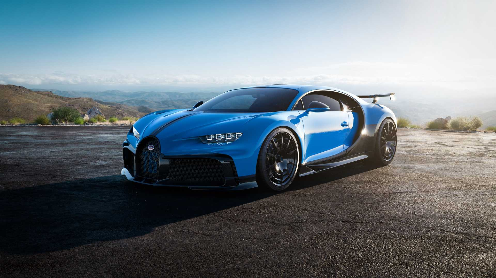

Tesla Model S adalah salah satu sedan listrik pertama yang memiliki desain menawan sekaligus futuristik. Lampu utamanya menggunakan LED dengan
desain rumah lampu menyipit. Di bagian belakang, bumper besarnya dilengkapi dengan LED dan aksen krom pada spoilernya.
Bagian interiornya menggunakan material kulit warna hitam yang mewah dan lembut. Terdapat layar sentuh berbentuk vertikal seperti notebook
di bagian tengah dashboard. Anda dapat mengatur ketinggian suspensi, bobot setir, mode berkendara dan mematikan mobil melalui layar sentuh ini.
Mobil yang digerakkan oleh tenaga listrik ini sangat responsif. Mobil ini mendapat tenaga dari baterei lithium-ion 100 kWh yang dalam
kondisi penuh mampu menempuh jarak 506 km. Lebih jauh 24 km dibandingkan dengan Model S 90D dan P90D.
Dengan motor penggerak di depan dan belakang dan menganut sistem AWD, tenaga yang dihasilkan di depan adalah 259 hp, sedangkan motor belakang
menghasilkan tenaga 503 hp. Kombinasi tenaga dari kedua motor tersebut adalah 680 hp. Sedangkan torsi depan 376 Nm, torsi belakang 712 Nm dan
kombinasi depan-belakang adalah 1073 Nm yang dikombinasikan dengan transmisi otomatis 1-kecepatan.
BMW M3
Rp. 2,000,000,000
Sedan yang dihadirkan sebagai generasi ke tiga dari seri M Series ini tersedia dalam bentuk coupe dan versi empat pintu. Tak hanya itu saja, BMW M3
Sedan ini akan dibekali dengan mekanisme yang lebih berkualitas dan sedikit cenderung kaku untuk menunjang penggunaan dalam aktivitas sport.
Selain memiliki desain sport, interior mewah, dan dimensi yang begitu ideal, BMW pun juga telah membekali sedan premiumnya ini dengan susunan mesin
yang sangat tangguh dan canggih.
Jika ditelisik pada ruang pacunya, diketahui bahwa mobil ini akan dipersenjatai dengan mesin M Twin Power Turbo 6 Silinder yang memiliki kapasitas
3.0 liter.
Di mana, mesin yang diusung sedan BMW M3 Sedan ini sanggup memberikan tenaga powerfull hingga 425 Hp setiap menginjak putaran antara 5500 – 7300 rpm.
Sementara itu, untuk torsi puncaknya sanggup meraih titik 406 Nm per putaran 1850 – 5500 rpm.
Nissan GTR
Rp. 1,600,000,000
Nissan GT-R memang dirancang sebagai supercar yang memiliki mesin bertenaga besar. Lihat saja mesin yang digunakan 3.8-liter Twin-turbocharged
24-valve V6. Mesin Nissan GT-R ini sudah menggunakan mesin turbo. Sehingga tenaga yang dihasilkan akan berkali-kali lipat besar dari
mesin biasa.
Mesin Nissan GT-R dapat menghasilkan tenaga maksimum sebesar 565 Ps pada 6.800 rpm. Sedangkan torsi puncak sebesar 467 Nm pada 3.300 - 5.800
rpm. Tidak hanya itu pengendara Nissan GT-R juga akan mendapatkan kecepatan mesin yang cukup kencang, dengan kecepatan maksimum 7.100 rpm.
Supercar ini sudah memiliki desain keren juga mempunyai mesin yang tangguh. Menggunakan Nissan GT-R untuk berkendara pasti akan mendapatkan
pengalaman berbeda. Terlebih lagi raungan suara mesin akan menjadikan adrenalin pengendara semakin meningkat.
Bugatti Chiron
Rp. 46,800,000,000

Bugatti Chiron bisa dikatakan merupakan testamen tertinggi yang dicetuskan pabrikan Bugatti Automobiles S.A.S. yang bermarkas di Perancis.
Lewat Bugatti Chiron, benchmark hypercar menjadi terukir kembali dan menempatkan Bugatti Chiron sebagai mobil hypercar yang tertinggi di
kelasnya.
Bugatti Chiron Sport tetap mempercayakan mesin Bugatti Chiron standar, yakni W16 8.000 cc Quad Turbocharger. Mesin ini mampu menyalurkan
serbuan tenaga puncak 1.500 dk dengan torsi maksimal 1.600 Nm, yang bisa didistribusikan ke seluruh roda dengan dukungan transmisi 7-Speed
Dual-Clutch DSG. Namun karena ini adalah Bugatti Chiron Sport, berkat revisi dari segi handling dan bobot yang lebih ringan 18 kg, menjadikan
laptime Bugatti Chiron Sport 2018 di Nardò test circuit lebih cepat 5 detik daripada Bugatti Chiron standar. Dan engineer Bugatti mengklaim
bahwa ubahan teknis yang terjadi di Bugatti Chiron Sport 2018 bisa membuat hypercar ini lebih percaya diri dalam mengeksekusi tikungan berkat
grip yang lebih maksimal, sekalipun saat menikung jarum speedometer sedang menunjukkan angka kecepatan 200 km/jam.
About Prestige
Prestige Car Gallery dibuat atas dasar kesukaan penulis terhadap mobil mewah, sport, elegan dan mahal meskipun tidak sanggup memilikinya :(